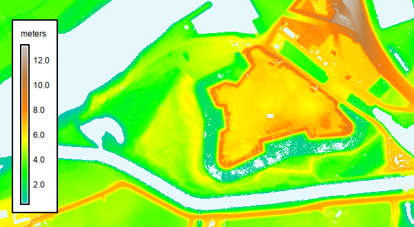
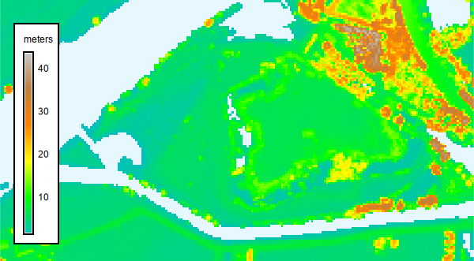
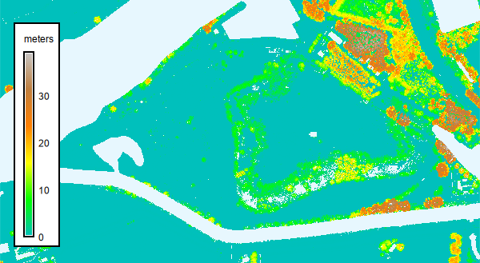

The user specifies the AHN version, the product (dtm, dsm, or chm), and the desired resolution. When chm is selected, the module first downloads and imports both the DTM and DSM and then computes the canopy height model (CHM) as the difference between DSM and DTM. In this case, all three layers are retained and written to the mapset using the user-defined output name with the suffixes _dtm, _dsm, or _chm.
The module determines which 1 × 1 km tiles intersect the current computational region, downloads the required tiles, imports them into the GRASS mapset and combines them in one layer. During this process, the computational region is (temporarily) adjusted so that the imported raster aligns with the native AHN grid and uses the selected resolution. The resulting raster always covers the original region (or the portion overlapping the AHN extent). When the -g flag is used, the original computational region is restored after the import is completed.
The computational region is modified during import to ensure that the resulting raster aligns with the AHN grid and matches the chosen resolution (0.5 m or 5 m). If the -g flag is provided, the region is reset to its original extent after the import.
All AHN versions are provided as 1 x 1 km tiles. Earlier datasets (AHN2 -AHN5), originally published as larger map sheets (5 x 6.25 km), have been reprocessed as 1 x 1 km tiles following the AHN6 specification. In the 0.5 m DTM, cell values represent an unweighted average of ground-level points; in the 0.5 m DSM, cell values represent the highest point. The earlier versions retain the original differences related to high-voltage structures: AHN4 DSM excludes high-voltage power lines but includes pylons, while AHN2 and AHN3 DSM include both lines and pylons. See the documentation on the AHN dataroom
Versions 5 and 6 do not cover the whole of the Netherlands yet. Check the AHN website for information about which parts are covered.
# Set the region for Fort Crèvecoeur g.region n=416562 s=415957 w=145900 e=147003 res=0.5 # Download the DSM r.in.ahn product=dtm output=dtm_crevecoeur resolution=0.5 version=4

r.in.ahn -g product=dsm output=dsm_crevecoeur resolution=5 version=4

r.in.ahn product=chm output=chm_crevecoeur resolution=0.5 version=4

{kind=link}
{kind=link}
{kind=link}